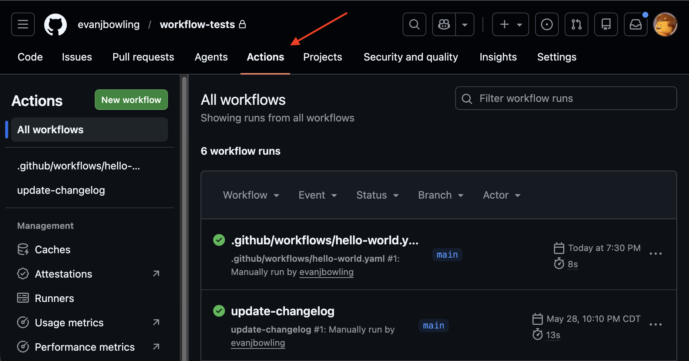

GitHub Actions provides a way to create CI/CD automation with code (GitOps instead of ClickOps).

Here’s the simplest action workflow I could create:
Here’s the simplest action workflow I could create:
Here’s the simplest action workflow I could create:
Here’s the simplest action workflow I could create:
on: # this configures when the workflow runs
workflow_dispatch: # this let's you run the workflow manually from UI or API
jobs: # a workflow has jobs (not actions)
hello: # this workflow has one job "hello"
runs-on: ubuntu-latest
steps: # a job has steps (which _can_ be an action)
- name: Print Hello # this job has one step (which is *not* an action)
run: echo "Hello World!"Events trigger workflows. Workflows have a structure like:
Workflow (top-level name:)
└── Job 1 (job name: or job ID)
├── Step 1
├── Step 2
└── Job 2 (job name: or job ID)
├── Step 1
├── Step 2Created .github/workflows/hello-world.yaml
Workflow (no name attribute - just uses the filename as the name)
└── Job (name: hello)
├── Step (name: Print Hello)name: update-changelog
on:
pull_request:
types:
- closed
branches:
- main
workflow_dispatch:
jobs:
update-changelog:
if: github.event_name == 'workflow_dispatch' || github.event.pull_request.merged == true
runs-on: ubuntu-latest
permissions:
contents: write
steps:
- name: Checkout Code
uses: actions/checkout@v4
- name: Update CHANGELOG.md
run: |
touch CHANGELOG.md
TIMESTAMP=$(date -u +"%Y-%m-%dT%H:%M:%SZ")
ENTRY="## version ${TIMESTAMP}"$'\n'
if [ -s CHANGELOG.md ]; then
echo -e "${ENTRY}\n$(cat CHANGELOG.md)" > CHANGELOG.md
else
echo "${ENTRY}" > CHANGELOG.md
fi
git config user.name "github-actions[bot]"
git config user.email "github-actions[bot]@users.noreply.github.com"
git add CHANGELOG.md
git commit -m "chore: update CHANGELOG.md"
git push